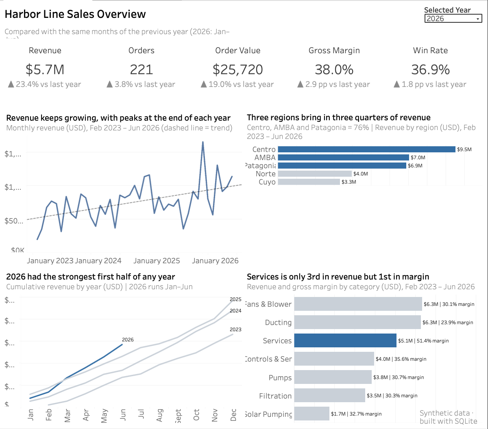
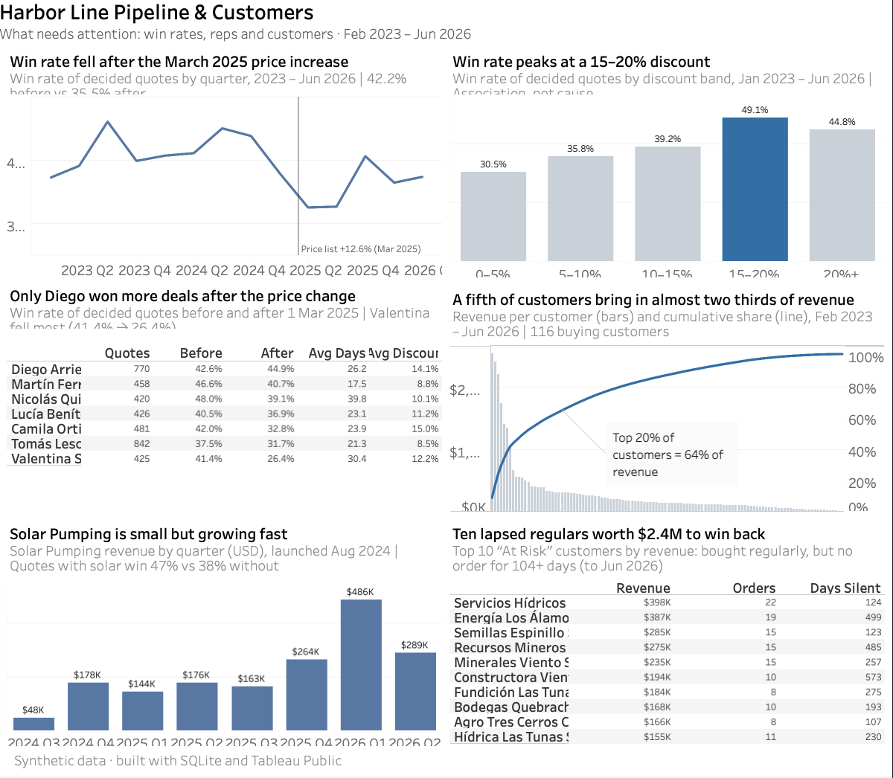

A SQL and Tableau analysis of three and a half years of quote-to-order data for a B2B equipment supplier: cleaning messy records, uncovering an undocumented price increase, and tracing how it changed win rates, profit and customers.
Harbor Line Industrial sells fans, ducting, filtration, pumps, controls and maintenance services to industrial customers across five Argentine regions, and launched a line of solar pumping kits in 2024. Every sale starts as a quote, and only some quotes become orders.
The question: how is the business performing, what is driving revenue and profit, and where should the sales team focus next? Answering it meant looking at the whole pipeline (quotes, win rates, orders, customers and reps), not just at revenue.
The dataset is synthetic: a fictional company with a 7-table relational database (reps, customers, products, quotes, quote lines, orders, order lines), generated with built-in data-quality problems to clean. All companies, people and figures are fictional.
Built clean views on top of the raw tables, never editing the originals, plus a mapping table to merge duplicate customers. Every view was reconciled back to its source on row counts and revenue.
Answered 19 questions, from headline KPIs to window functions (RANK, LAG, NTILE, running totals), CTEs, churn detection and RFM customer segmentation.
Exported four analysis views to CSV and built two dashboards: a sales overview and a pipeline and customers view, each chart titled with the point it makes.
The customer and order data came from an old CRM and an ERP export. Before any analysis, I profiled every table and fixed four problems:
One fix taught me something about SQLite: its LOWER() function doesn't convert accented capital letters, so "HÍDRICOS" and "Hídricos" didn't match and the fourth duplicate stayed hidden until I replaced accented letters first.
The product table had a single list price, so I checked whether it stayed valid for the whole period. The average quoted price was about 89% of list price until February 2025, then jumped to 100% in March 2025 and stayed there.
That step meant the price list had gone up by about 12.6% in March 2025, with no record of it in the data. Correcting for it mattered: without the fix, discounts after March 2025 would have looked like zero. With it, reps kept giving the same ~11% discount on the higher prices, so customers paid the full increase.
Comparing the 12 months before and after the change: the business won fewer deals but earned much more on each one. The cost was more quoting work for every order, and several regular customers who stopped buying around the time of the increase.
Two dashboards on Tableau Public. The first gives an overview of sales, with each year compared with the same months of the previous year. The second focuses on what needs attention: win rates, reps, revenue concentration, the new solar line and the customers worth winning back.


After the 12.6% increase, win rate fell from 43.4% to 36.0% and orders fell 12%, but gross profit grew about 21%. Six of the ten regular customers who have since gone quiet stopped buying around the change.
The top 20% of customers bring in 64.1% of revenue. In the Norte region, a single customer accounts for 55.6% of the region's revenue.
Launched in August 2024, the line brought in $774K in January–June 2026, more than all of 2025. Quotes that include solar products are won 47.1% of the time, against 37.7% without.
Services is 16.5% of revenue but 25.5% of gross profit, with a 51.4% margin. Ducting has the lowest margin, at 23.9%.
Five customers asked for 10% of all quotes but brought in only 2% of revenue, winning just 12–18% of the time against a 38.5% average.
Every rep kept the same discount level, and almost all of them won less after March 2025. Diego Arrieta was the only rep whose win rate rose (+2.3 pp).
Limitations: the data has no record of why quotes were lost, how long each quote took to prepare, or competitors' prices. The link between the price increase and the customers who left rests on timing, so it should be confirmed before acting on it.